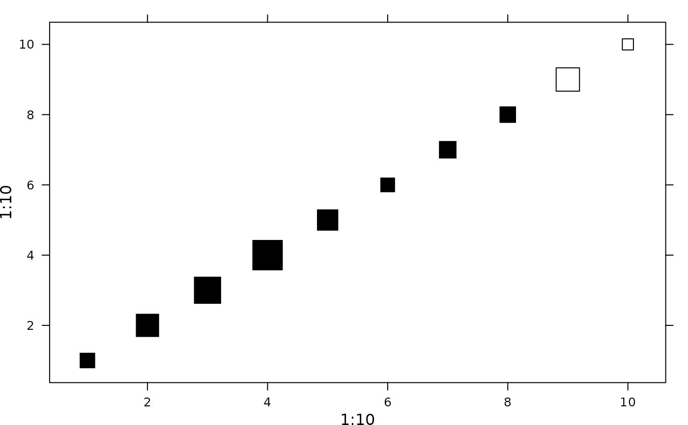

Panel function drawing a third variable into a two-dimensional scatterplot
adeg.panel.values.RdPanel function for drawing coordinates with variable representation. The values can be represented through symbols with proportional size or various colors.
Arguments
- x
a numeric vector, x-coordinates for the symbols
- y
a numeric vector, y-coordinates for the symbols
- z
a numeric vector, the third variable with one value per coordinates (x, y)
- method
a character string equal to
colororsize.
Ifcolor, a palette of color is used for the symbols (one color per interval defined bybreaks).
Ifsize, symbols' area is proportional to the value. Area is 0 for values equals tocenter. Two colors are used, one for values smaller than center and the other for values larger than center.- symbol
a character string equal to
squareorcircle.- ppoints
a list of parameters as an extract of
adegpar("ppoints"), used for points' drawing.alpha: transparency of pointscex: size of pointscol: border color of pointspch: symbol to usefill: filling color
- breaks
a vector, the breaks used for splitting
zifmethodiscolor- centerpar
a list to represent center value using elements in the
adegpar("ppoints")list orNULLvalue. If the method issize, z-values equals tocenterhave a size of zero. Ifcenterparis notNULL, those z-values are shown as points with thecenterpardrawing parameters.- center
a center value for method
size
References
Tanimura, S. and Kuroiwa, C. and Mizota, T. 2006 Proportional symbol mapping in R Journal of Statistical Software 15, 1–7
Author
Alice Julien-Laferriere, Aurelie Siberchicot aurelie.siberchicot@univ-lyon1.fr and Stephane Dray
Note
For more information about the use of panel functions, please see the lattice package developed by Deepayan Sarkar.
For the symbols size, the method is size uses perceptual scaling (Tanimura et al. 2006).
Examples
if(require(lattice, quietly = TRUE)) {
param <- adegpar("ppoints")[[1]]
param$col <- adegpar("ppalette")[[1L]]$quanti(2)
z <- rnorm(10)
xyplot(1:10 ~ 1:10, panel = function(x, y, ...){
adeg.panel.values(x, y, z, method = "size", symbol = "square", ppoints =
param, breaks = pretty(z, 4))})
}

if(require(lattice, quietly = TRUE)) {
param$col <- adegpar()$ppalette$quali((length(pretty(z, 2)) - 1))
xyplot(1:10 ~ 1:10, panel = function(x, y, ...){
adeg.panel.values(x, y, z, method = "color", symbol = "circle",
ppoints = param, breaks = pretty(z, 2))})
}